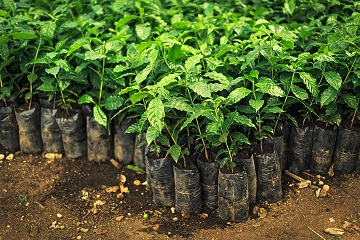
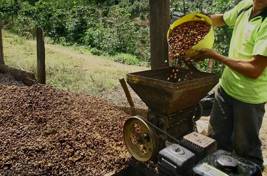
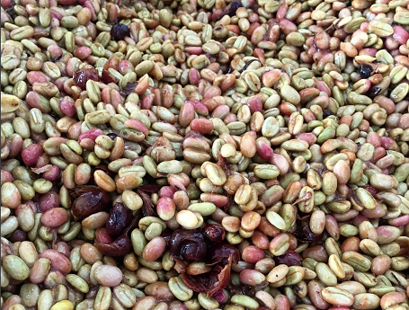
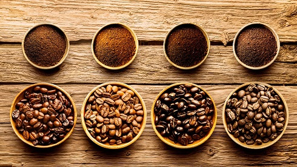
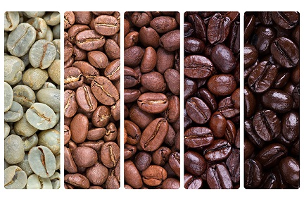
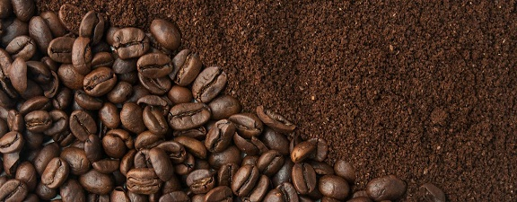
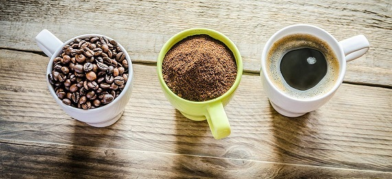

Etapas del proceso de producción del café
Mucho antes de disfrutar del aromático sabor de un buen café, se produce un interesante proceso de varias etapas, forjado y perfeccionado generación tras generación.
Plantación:
Todo comienza con el proceso de plantado, un ciclo natural en el que se verá crecer a las semillas hasta convertirse en arbustos de hasta 10 metros de alto. La forma del sembrado y del manejo del cultivo son fundamentales para la calidad del grano.
Cosecha:
Anualmente se produce la cosecha, cuando las cerezas del café se encuentran maduras. Se utilizan dos métodos para cosechar.
- Picking:Las cerezas más maduras se seleccionan y recogen manualmente, dando una cosecha homogénea y de calidad.
- Stripping:Este es un proceso mecanizado en el que se recojen todas las cerezas de una vez, lo que requiere una posterior comprobación para seleccionar detalladamente las cerezas a utilizar.
Procesamiento:
Se elimina la pulpa de la cereza de café y se seca para transformar el café recolectado en café listo para la próxima etapa. Puede ser por método seco o método húmedo, ambos determinan las características en el sabor del café final.
Curado:
Se elimina la cáscara que recubre al grano para clasificarlo según su calidad, forma y tamaño. Se realiza antes de la exportación.
Cata:
La degustación del café se lleva a cabo en distintos momentos del proceso y de formas muy distintas. Tiene como objetivo analizar su calidad y sabor.
Tueste:
Durante el proceso de tostado, el café obtiene su sabor y aroma más característico.El grano es sometido a temperaturas de hasta 200°, lo que hace que aumente en casi 100% su tamaño y pierda un 20% de peso, disminuyendo su cafeína y adquiriendo un color marrón.
Molido:
El molido reduce el grano a polvo mediante el uso de un molino. Si se prepara el café justo después de este proceso, se obtiene un aroma y un sabor más intenso.
Preparación:
Existen múltiples formas y máquinas para preparar un café perfecto, las cuales se pueden consultar acá:Cafeteras.
